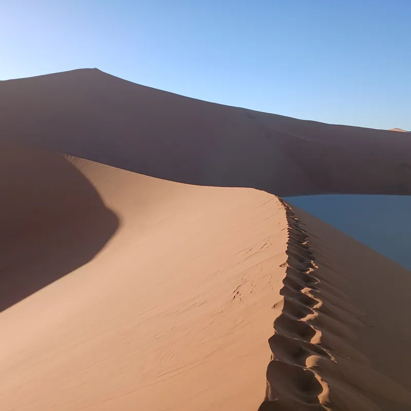
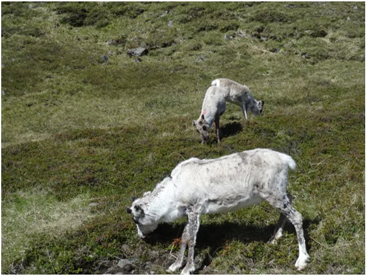
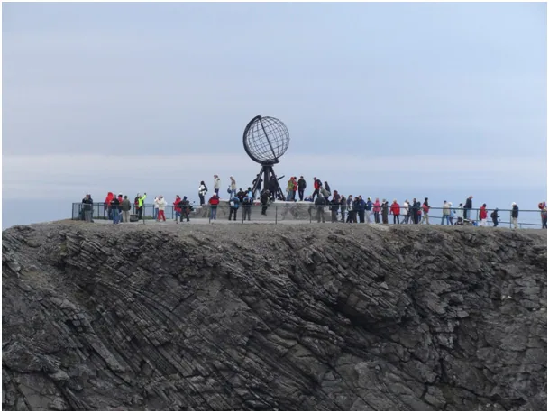
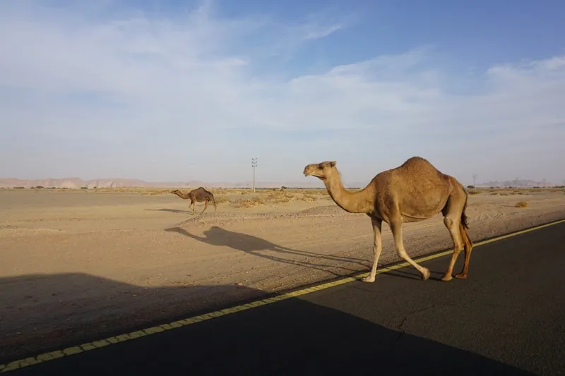

film

Podróże po świecie
Jacek Lesiczka. 128 odwiedzonych krajów i ciągle dochodzą nowe. Zdjęcia i zapiski z drogi, kraj po kraju.
Moje państwaSossusvlei, Namibia, XI 2024
Najnowsze wpisy
Każdy wpis jest tutaj i jednocześnie na stronie swojego kraju. Kliknij nazwę kraju, żeby zobaczyć wszystkie wpisy z niego.
Sierra LeoneLiberiaXII 2025
Na granicy Sierra Leone i Liberii
Jacek Lesiczka przy busie z wysoko załadowanym bagażem na dachu, granica Sierra Leone i Liberii.


Wyspy Świętego Tomasza i KsiążęcaX 2024
Widok na Pico Cão Grande, 683 m
W drodze z Sao Tome do Porto Alegre.

Moje państwa
Każdy kraj z wpisami ma swoją stronę ze zdjęciami i opisami. Kolejne dochodzą razem z nowymi wpisami.
128odwiedzonych krajów
- 57FinlandiaVI 2012
- 58NorwegiaVI 2012
- 101Bali, IndonezjaXII 2016
- 102Timor WschodniXII 2016
- 112Arabia SaudyjskaIX 2021
 Sahara Zachodnia1 wpis
Sahara Zachodnia1 wpis Liberia1 wpis
Liberia1 wpis- Sierra Leone1 wpis
- Namibia2 wpisy
 Wyspy Świętego Tomasza i Książęca3 wpisy
Wyspy Świętego Tomasza i Książęca3 wpisy Meksyk1 wpis
Meksyk1 wpis Arabia Saudyjska2 wpisy
Arabia Saudyjska2 wpisy- Japonia1 wpis
 Izrael1 wpis
Izrael1 wpis- Timor Wschodni1 wpis
- Indonezja1 wpis
 Finlandia1 wpis
Finlandia1 wpis Norwegia1 wpis
Norwegia1 wpis
Odwiedzone, jeszcze bez wpisów: Abchazja, Albania, Andora, Armenia, Austria, Azerbejdżan, Belgia, Białoruś, Bośnia i Hercegowina, Bułgaria, Chorwacja, Cypr, Cypr Północny, Czarnogóra, Czechy, Dania, Estonia, Francja, Górski Karabach, Grecja, Gruzja, Hiszpania, Holandia, Irlandia, Islandia, Kosowo, Liechtenstein, Litwa, Łotwa, Luksemburg, Macedonia, Malta, Mołdawia, Monako, Naddniestrze, Niemcy, Osetia Południowa, Polska, Portugalia, Rosja, Rumunia, San Marino, Serbia, Słowacja, Słowenia, Szwajcaria, Szwecja, Ukraina, Watykan, Węgry, Wielka Brytania, Włochy
Odwiedzone, jeszcze bez wpisów: Algieria, Angola, Egipt, Etiopia, Gambia, Gwinea, Kenia, Madagaskar, Maroko, Mauretania, Mauritius, Republika Południowej Afryki, Republika Zielonego Przylądka, Senegal, Tanzania, Tunezja
Odwiedzone, jeszcze bez wpisów: Bahrajn, Bhutan, Chiny, Indie, Iran, Jemen, Jordania, Kambodża, Katar, Kazachstan, Kirgistan, Kuwejt, Laos, Liban, Malediwy, Malezja, Nepal, Oman, Singapur, Tajlandia, Turcja, Uzbekistan, Wietnam, Zjednoczone Emiraty Arabskie
Odwiedzone, jeszcze bez wpisów: Antigua i Barbuda, Barbados, Dominika, Dominikana, Grenada, Gwatemala, Kanada, Kuba, Panama, Saint Kitts i Nevis, Saint Lucia, Saint Vincent i Grenadyny, Stany Zjednoczone, Trynidad i Tobago
Wpisy z tego kontynentu w przygotowaniu. Odwiedzone kraje: Argentyna, Boliwia, Brazylia, Chile, Ekwador, Kolumbia, Paragwaj, Peru, Urugwaj
Moja pasja
Fragmenty dziennika z drogi.
Nordkapp i okolice
W maju 2012 samochodem na Litwę, Łotwę i Estonię, w czerwcu z przyjacielem Krzysiem Jarząbkowskim samolotem do Oulu i wynajętym autem przez Laponię aż na Nordkapp. Moje pierwsze przekroczenie koła podbiegunowego.
66 32 35, koło podbiegunowe pod Rovaniemi
Timor WschodniXII 2016, mój 102 kraj
Dili, Timor Leste
Urzędnik z zaciekawieniem ogląda mój paszport i nie przyjmuje 30 dolarów USA opłaty wizowej. Polandia znajduje się na krótkiej liście krajów zwolnionych z opłaty wizowej. Miłe.
Ląduję w Dili po niecałych dwóch godzinach lotu z Denpasar. Dawne portugalskie budynki, wybrzeże z widokiem na wyspę Atauro i 27-metrowa statua Chrystusa Króla nad Praia de Cristo Rei.
8°31′13″S 125°36′30″E
Galeria











O mnie
Bloga o podróżach prowadzę od października 2014 roku. Piszę o miejscach, do których dotarłem: samochodem z Wrocławia na Litwę, Łotwę i Estonię, wynajętym autem z Oulu aż na Nordkapp, jeepami pod Elephant Rock w Al-Ula, indonezyjskimi liniami z Denpasar do Dili.
Każde miejsce zapisuję tak samo: miesiąc, rok, czasem współrzędne. Odwiedziłem już 128 krajów i lista wciąż rośnie.